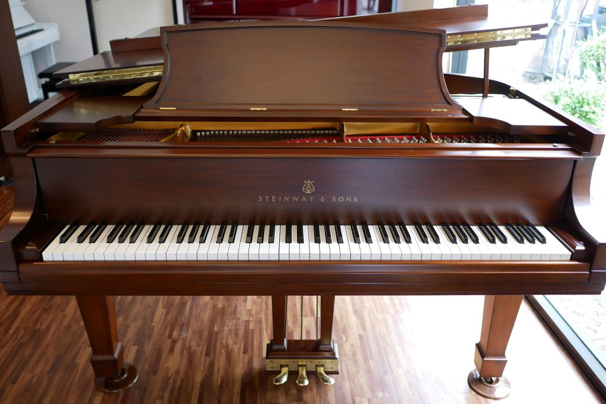

|  |
เป็นเครื่องดนตรีขนาดใหญ่ที่สร้างเสียงเมื่อคีย์ถูกกดและกลไก ภายในเครื่องตีสาย คำว่าเปียโนเป็นตัวย่อของคำว่า เปียโนฟอร์เต [ Pianoforte ] ซึ่งเป็นคำภาษาอิตาเลียนที่ แปลว่า “เบาดัง” มาจากความสามารถของเปียโนที่จะปรับความดังเบาตามแรงที่กดคีย์ ใน ฐานะเครื่องสายเปียโนมีความคล้ายคลึงกับคลึงคลาวิคอร์ด[ Clavichord ] และฮาร์พซิคอร์ด [ Harpsichord ] จะแตกต่างกันเพียงวิธีการสร้างเสียง สายฮาร์พซิคอร์ดจะถูกดีดหรือเกาโดยขน นก ส่วนสายของคลาวิคอร์ดจะถูกเคาะด้วยกลไกที่จะยังคงสัมผัสกับสายอยู่ตลอดเวลา หลังการเคาะ เพื่อบังคับความถี่ของการสั่นส่วนสายเปียโนถูกเคาะด้วยลิ่มที่สะท้อนกลับใน ทันที เพื่อให้เกิดการสั่นของสายอย่างเป็นอิสระ เปียโน เป็นเครื่องดนตรีที่สำคัญในดนตรีคลาสสิกตะวันตก ดนตรีแจ๊ซ ภาพยนตร์ รายการโทรทัศน์ และดนตรีอีกหลายรูปแบบเปียโนยังเป็นเครื่องดนตรีที่ได้รับความนิยมอย่างสูง ในหมู่ชนชั้นกลางและชนชั้นสูง เปียโนถูกคิดค้นขึ้นที่เมืองฟลอเรนซ์ ประเทศอิตาลี โดยบาร์โทโลเมโอ คริสโตโฟรี ราย ละเอียดเวลาที่คริสโตโฟรีประดิษฐ์เปียโนเครื่องแรกนั้นไม่ชัดเจน แต่จากบันทึกของครอบครัวเมดิชิ ผู้ที่ว่าจ้างคริสโตโฟรี ปรากฏว่ามีเปียโนตั้งแต่ปี คศ. 1700 คริสโตโฟรีสร้างเปียโนอีก 20 เครื่องก่อนที่เขาจะเสียชีวิตในปี คศ. 1731 และเปียโน 3 ตัวของเขาที่ยังคงอยู่ในปัจจุบันย้อนมาจากช่วงปี คศ. 1720 |
|||
|---|---|---|---|---|
|
ประวัติเปียโน (ย่อมาจาก เปียโนฟอร์เต) เป็นเครื่องดนตรีที่บรรเลงโดยการกดลิ่มนิ้ว (คีย์บอร์ด)[1] มักใช้นิยมบรรเลงเพลงแนว คลาสสิก และ แจ๊ส แม้ว่าเปียโนจะมีขนาดใหญ่และหนักทำให้ไม่สามารถพกพาได้ และมีราคาค่อนข้างแพง แต่เปียโนก็เป็นเครื่องดนตรีที่ได้เปรียบเครื่องดนตรีมากมาย เสียงของเปียโนสามารถเข้ากับเครื่องดนตรีเกือบทุกชนิด ดังนั้นเปียโนจึงสามารถเล่นได้ทั้งแบบบรรเลงเดี่ยว, แชมเบอร์, คลอเสียง หรือแม้กระทั่งร่วมกับวง ออร์เคสตรา ฝาครอบและแผ่นครอบของเปียโนอะคูสติกจะทำมาจากไม้ ในขณะที่กระดานเสียง (soundboard) จะถูกทำจากเหล็กกล้า และขึงด้วยสายโลหะ ลิ่มนิ้วของเปียโนมาตรฐานมีอยู่ทั้งหมด 88 คีย์ (คีย์ขาว 52, คีย์ดำ 36) ช่วงคีย์ปกติจะมีสายโลหะอยู่ 3 เส้นในหนึ่งคีย์ และคีย์เบสจะมีสายโลหะเส้นใหญ่อยู่ 1–2 เส้นในหนึ่งคีย์ เมื่อกดคีย์ จะเกิดเป็นเสียงโน้ตดนตรีที่มีความถี่การสั่นพ้องแตกต่างกันออกไป[2] และเมื่อปล่อยคีย์ เสียงก็จะถูกตัด หากต้องการให้เสียงกังวานและลากยาวก็สามารถทำให้ โดยการเหยียบเพดัลขวา (คันเหยียบ) ที่อยู่บริเวณด้านล่างของเปียโนค้างไว้ กลไกการเกิดเสียงในเปียโนอะคูสติกนั้น เริ่มจากแรงจากการกดคีย์จะถูกส่งผ่านโดยกลไกที่ซับซ้อนไปยังหัวค้อน และหัวค้อนจะตีกระทบกับสายโลหะที่ขึงอยู่บนกระดานเสียงเกิดเป็นเสียงดนตรี ในระหว่างที่คีย์ถูกกดอยู่นั้น กลไกที่เรียกว่า แดมเปอร์ (damper) ของแต่ละคีย์ ซึ่งเดิมจะคอยดันสายโลหะไว้จะถูกยกออก ทำให้สายโลหะเกิดการสั่นพ้องได้ เมื่อใดก็ตามที่ปล่อยคีย์ แดมเปอร์จะกลับมาดันสายโลหะ ทำให้เสียงถูกตัดไป ดังนั้นการเหยียบเพดัลขวา จะเป็นการยกเพดัลของทุกคีย์ออก ทำให้สายโลหะเกิดการสั่นพ้องและกังวานมากขึ้นซึ่งทำให้เพลงมีความไพเราะ อย่างไรก็ตาม การเหยียบเพดัลขวาแช่ไว้ จะทำให้เสียงโน้ตดนตรีกังวานจนตีกับโน้ตดนตรีที่ตามมาทีหลัง ดังนั้นผู้บรรเลงจึงต้องทำการยกเท้าจากเพดัลเป็นจังหวะ ๆ เพื่อเป็นการตัดโน้ตดนตรีไม่ให้ข้ามห้องหรือตีกัน คำว่า เปียโน นั้น เป็นคำย่อจากคำว่า เปียโนฟอร์เต ซึ่งเป็นภาษาอิตาลี ซึ่งเป็นการประสมคำระหว่างคำว่า เปียโน ที่แปลว่า "นุ่มนวล" กับ ฟอร์เต ที่แปลว่า "แข็งแกร่ง"[3] ซึ่งมีที่มาจากการที่เปียโนนั้นมีคุณภาพเสียงที่หลากหลาย คีย์เบสที่ให้เสียงกังวานและทรงพลัง คีย์ปกติที่ให้เสียงนุ่มนวล และคีย์สูงที่ให้เสียงเล็กแหลม |
|||
คลิปวิดิโอ |
||||
ผู้จัดทำ เด็กหญิงสายธารธรรม อินตากูล ป.6/5 เลขที่32 โรงเรียนอัสสัมชัญลำปาง |
||||